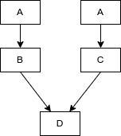
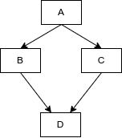

一、语法 1. 对象 1.1. 类的大小 空类 C++标准指出，不允许一个对象（当然包括类对象）的大小为 0，不同的对象不能具有相同的地址。这是由于：
new 需要分配不同的内存地址，不能分配内存大小为 0 的空间 避免除以 sizeof(T)时得到除以 0 错误 故使用 1 个字节来区分空类。结构体与此相同，空结构体大小为 1 个字节
1 2 3 4 5 6 7 class A {};class B {int a};int main () printf ("Sizeof empty class %d" , sizeof (A)); printf ("Sizeof not empty class %d" , sizeof (B)); }
字节对齐 类中变量大小需要字节对齐，计算大小时需注意
1 2 3 4 5 6 7 8 class A { int a; char b; } int main () printf ("Sizeof class A %d" , sizeof (A)); }
静态变量 静态成员属于类作用域，但不属于类对象，它的生命周期和普通的静态变量一样，程序运行时进行分配内存和初始化，程序结束时则被释放。所以不能在类的构造函数中进行初始化。
static 成员的优点 static 成员的名字是在类的作用域中，因此可以避免与其它类成员或全局对象名字冲突。 可以实施封装，static 成员可以是私有的，而全局对象不可以。 阅读程序容易看出 static 成员与某个类相关联，这种可见性可以清晰地反映程序员的意图。 static 成员函数特点 因为 static 成员函数没有 this 指针，所以静态成员函数不可以访问非静态成员。 非静态成员函数可以访问静态成员。 静态数据成员与类的大小无关，因为静态成员只是作用在类的范围而已。 大小 静态变量不占用类的大小中，所以 sizeof 输出的大小不包含静态变量的大小
1 2 3 4 5 6 7 8 9 10 class A { int a; char b; static int c; } int main () printf ("Sizeof class A %d" , sizeof (A)); }
成员函数 成员函数不算在类的大小中
1 2 3 4 5 6 7 8 9 10 11 class A { int a; char b; int fun1 () static int fun2 () } int main () printf ("Sizeof class A %d" , sizeof (A)); }
1.2. 实例化 构造函数 如果不写构造函数，系统会默认初始化一个默认构造函数 当写了带参数的构造函数（拷贝、移动构造函数均属于带参数的构造函数），系统将不会创建默认构造函数，默认构造函数不可用，除非自己定义 如果存在无法进行拷贝的成员（如std::mutex），需要显式定义拷贝构造函数，并且不能使用default。不写和使用default在调用拷贝时会编译失败 对于包含动态分配成员或包含指针成员的类都应该提供拷贝构造函数；在提供拷贝构造函数的同时，还应该考虑重载”=”赋值操作符号。 拷贝构造函数的调用一般为变量初始化时使用另一个变量的复制体构造，拷贝赋值函数为变量已经初始化了，使用另一个变量进行拷贝赋值 移动构造函数的调用一般为变量初始化时使用右值构造，移动赋值函数为变量已经初始化了，使用右值进行移动赋值 1 2 3 4 5 6 7 8 9 10 11 12 13 14 15 16 17 18 19 20 21 22 23 24 class A { public : A () = default ; A (int n) {} A (const A &a) = default ; A &operator =(const A &a) = default ; A (A &&a) = default ; A &operator =(A &&) = default ; }; int main () A var1; A var2 (1 ) ; A var3 = var1; var3 = var2; A var4 = std::move (var1); var4 = std::move (var2); }
explicit 关键字 禁止构造函数的隐式调用，即非预期的转换 单参数构造函数会要求声明，多参数可选，无参不需要 1 2 3 4 5 6 7 8 9 class A {public : A (int n) {} }; int main () A a = 10 ; A a (10 ) ; }
析构函数 析构函数不能写成纯虚函数，因为析构会从子类析构函数向上调用，父类未定义会有问题，编译都放不过 如果存在继承关系，析构函数要写虚析构，这样会在析构的时候找继承表调用子类析构函数 1 2 3 4 5 6 7 8 9 10 11 12 13 14 15 16 17 18 19 20 21 22 23 24 25 26 27 28 class A {public : virtual ~A () { LOG_INFO ("~A() destructor" ); } }; class B : public A {public : ~B () { LOG_INFO ("~B() destructor" ); } }; class C {public : ~C () { LOG_INFO ("~C() destructor" ); } }; class D : public C {public : ~D () { LOG_INFO ("~C() destructor" ); } }; int main (int argC, char *argV[]) A *var1 = new B (); delete var1; C *var2 = new D (); delete var2; return 0 ; }
使用和不适用 new 用类名创建对象，相当于局部变量，变量在栈上，系统自动销毁。 使用 new 创建对象，在堆上申请内存，返回指针，需要 delete 进行销毁。 加不加括号的区别 类名 对象名默认调用“对象名()”这个构造函数，在栈内存中存在对象名，在堆内存中存在实际对象； 类名 对象名() 类名 对象名(一个或以上个参数)默认调用相应的构造函数，在栈内存中存在对象名，在堆内存中也是存在实际对象的； 1 2 3 4 5 6 7 8 9 10 11 class A { public : A () = default ; A (int n) {} }; int main () A a1; A a2 () ; A a3 (5 ) ; }
参数是否初始化 使用 new new 一个对象不加括号，如果有默认构造函数则会初始化；没有默认构造函数相当于只分配了内存，灭有初始化 new 一个对象加括号，有默认构造函数或者没有构造函数会初始化，但是写空的构造函数不会初始化 带参数的构造函数会先调用不带参数的默认构造函数，参数是否初始化同上 1 2 3 4 5 6 7 8 9 10 11 12 13 14 15 16 17 18 19 20 21 22 23 24 25 26 27 28 29 30 31 32 33 34 35 36 37 38 39 40 41 42 43 44 45 46 47 48 class A { public : int m_a; A () = default ; A (int n){} }; class B { public : int m_b; }; class C { public : int m_c; C () {} C (int n) {} }; int main (int argC, char * arg[]) A *pA1 = new A; A *pA2 = new A (); A *pA3 = new A (5 ); LOG_DEBUG ("'A *pA1 = new A;' is at 0x%p, a %d" , pA1, pA1->m_a); LOG_DEBUG ("'A *pA2 = new A();' is at 0x%p, a %d" , pA2, pA2->m_a); LOG_DEBUG ("'A *pA3 = new A(5);' is at 0x%p, a %d" , pA3, pA3->m_a); B *pB1 = new B; B *pB2 = new B (); LOG_DEBUG ("'B *pB1 = new B;' is at 0x%p, b %d" , pB1, pB1->m_b); LOG_DEBUG ("'B *pB2 = new B();' is at 0x%p, b %d" , pB2, pB2->m_b); C *pC1 = new C; C *pC2 = new C (); C *pC3 = new C (5 ); LOG_DEBUG ("'C *pC1 = new C;' is at 0x%p, c %d" , pC1, pC1->m_c); LOG_DEBUG ("'C *pC2 = new C();' is at 0x%p, c %d" , pC2, pC2->m_c); LOG_DEBUG ("'C *pC3 = new C(5);' is at 0x%p, c %d" , pC3, pC3->m_c); delete pA1; delete pA2; delete pA3; delete pB1; delete pB2; delete pC1; delete pC2; delete pC3; }
输出
1 2 3 4 5 6 7 8 'A *pA1 = new A;' is at 0x0x55575e582e70, a 0 'A *pA2 = new A();' is at 0x0x55575e582e90, a 0 'A *pA3 = new A(5);' is at 0x0x55575e582eb0, a 0 'B *pB1 = new B;' is at 0x0x55575e583590, b 1413816944 'B *pB2 = new B();' is at 0x0x55575e5835b0, b 0 'C *pC1 = new C;' is at 0x0x55575e5835d0, c 1413815456 'C *pC2 = new C();' is at 0x0x55575e5835f0, c 1413815456 'C *pC3 = new C(5);' is at 0x0x55575e583610, c 1413815456
1.3. new 和 malloc 的区别 特征 new/delete malloc/free 分配内存的位置 自由存储区 堆 内存分配失败返回值 完整类型指针 void*内存分配失败返回值 默认抛出异常 返回 NULL 分配内存的大小 由编译器根据类型计算得出 必须显式指定字节数 处理数组 有处理数组的 new 版本 new[] 需要用户计算数组的大小后进行内存分配 已分配内存的扩充 无法直观地处理 使用 realloc 简单完成 是否相互调用 可以，看具体的 operator new/delete 实现 不可调用 new 分配内存时内存不足 客户能够指定处理函数或重新制定分配器 无法通过用户代码进行处理 函数重载 允许 不允许 构造函数与析构函数 调用 不调用
1.4. 继承 (1) 构造函数 子类会默认调用父类的无参构造函数 父类的有参构造函数不会默认继承，需要显示声明，可以用下面两种方式child(int i) : father(i) {} using father:father; (2) virtual virtual 定义的函数会在调用时，根据指针找到子类实现去调用 private 函数，可以使用 virtual，虽然子类无法访问，但是不影响重写 纯虚函数必须在子类中声明，不能只实现 1 2 3 4 5 6 7 8 9 10 11 12 13 14 15 16 17 18 19 20 21 22 23 24 25 26 27 28 29 30 class A { public : virtual void func () "class A, func" << std::endl; } private : virtual void privFunc () "class A, privFunc" << std::endl; } } class C { public : virtual void pureFunc () 0 ; } class B : public A, public C { public : void func () "class B, func" << std::endl; } void pureFunc () "class B, pureFunc" << std::endl; } private : void privFunc () "class B, privFunc" << std::endl; } } void main () A *a = new A (); a->func (); A *b = new B (); b->func (); C *c = new C (); }
(3) override 编译时检查重写 override 是可以在编译期检查是否是重写了父类的函数，要求父类必须是 virtual 定义的函数 override 函数可以再次在子类被 override 掉 1 2 3 4 5 6 7 8 9 10 11 12 13 14 15 16 17 class A {public : virtual void func () 0 ; }; class B : public A {public : void func () override void func (int a) override }; class C : public B {public : void func () override };
(4) final 禁止继承/重写 1 2 3 class A final {};class B : public A {};
1 2 3 4 5 6 7 8 9 10 11 12 13 14 class A {public : virtual void func () 0 ; } class B : public A {public : void func () override final } class C : public B {public : void func () override }
(5) 虚继承 1 2 3 4 5 6 7 8 9 10 11 12 13 14 15 16 17 18 19 20 21 22 23 24 25 26 27 28 29 30 31 32 33 34 35 36 37 38 39 40 41 42 43 44 45 46 47 48 49 50 51 52 53 class A {public : A () { LOG_INFO ("A()" ); m_a = 1 ; } protected : int m_a; }; class B : public A {public : B () { LOG_INFO ("B()" ); m_a = 2 ; } protected : int m_b; }; class C : public A {public : C () { LOG_INFO ("C()" ); m_a = 3 ; } protected : int m_c; }; class D : public B, public C {public : D () { LOG_INFO ("D()" ); } void func () printf ("%d\n" , m_a); printf ("%d\n" , B::m_a); } private : int m_d; }; int main (int argC, char *argV[]) D d; d.func (); return 0 ; }
这时D调用属性m_a是从B继承来的还是从C继承来的就会造成歧义，直接调用编译器会报错，不知道从谁而来。 指定从谁来的就不会有问题，可以理解为下图的关系，其实是有两个A 
构造函数调用也是A -> B -> A -> C -> D 而使用virtual继承后 1 2 3 4 5 6 7 8 9 10 11 12 13 14 15 16 17 18 19 20 21 22 23 ... class B : virtual public A { ... }; class C : virtual public A { ... }; class D : public B, public C {public : D () { LOG_INFO ("D()" ); } void func () printf ("%d\n" , m_a); } private : int m_d; }; ...
构造函数调用顺序A -> B -> C -> D，可以看出A只有一份，也就是下图的样子 
2. 引用 指针和引用的区别 指针 * 引用 & 可以指向空地址 不可为空 变量，储存地址，初始化后可变 就是所引用的变量，初始化后不可变 可以有多级，如**p 只有一级 sizeof 为指针变量的大小 sizeof 为对象大小
3. 异常处理 3.1. 抛出异常和捕获异常 抛出异常可以使用任意类型，包括内置类型，也可以抛出一个异常类 使用...可以捕获所有异常 使用throw语句，类的析构函数会被调用 1 2 3 4 5 6 7 8 9 10 11 12 13 throw MyError ("Something bad happened" );try { } catch (type1 id1) { } catch (type2 id2) { } catch (...) { }
3.2. 重新抛出异常 1 2 3 4 catch (...) { throw ; }
注意事项 如果异常抛出一个类，将抛出一个类的拷贝，所以此类必须可拷贝 如果异常抛出一个派生类，捕获使用基类可以捕获基类和所有派生类的异常，通常将派生类的捕获放在前面，基类的捕获放在最后用于捕获其他不常用的所有派生类的异常 3.3. terminator() 当没有一个异常处理器捕获某种异常的时候，terminator()会被调用 当析构函数中抛出异常时，terminator()会被调用 set_terminator() 用户可以自定义void terminator()函数 首次调用会返回默认的函数指针 示例
1 2 3 4 5 6 7 8 9 10 11 12 13 14 15 16 17 18 19 20 21 22 23 24 25 26 27 28 29 30 31 32 33 #include <iostream> #include <exception> using namespace std;void terminator () cout << "I'll be back!" << endl; exit (0 ); } void (*old_terminate)() = set_terminate (terminator);class Botch {public : class Fruit {}; void f () cout << "Botch::f()" << endl; throw Fruit (); } ~Botch () { cout << "~Botch()" << endl; throw 'c' ; } }; int main () try { Botch b; b.f (); } catch (...) { cout << "Inside catch(...)" << endl; } }
输出
1 2 3 Botch::f() ~Botch() I'll be back!
4. 显式转换 C++对类型转换有下面几种专门的类进行转换，使用 C 语言的强制转换在编译时可能会报错 1 2 3 4 static_cast <new_type> (expression)dynamic_cast <new_type> (expression)const_cast <new_type> (expression)reinterpret_cast <new_type> (expression)
static_cast基本类型转换，不能用于不同指针类型的转换 不能去除const、volatile、__unaligned属性 可以将void *转成其他类型的指针 1 2 3 4 5 6 7 8 9 10 11 char a = 'a' ;int b = static_cast <char >(a); double *c = new double ;void *d = static_cast <void *>(c); int e = 10 ;const int f = static_cast <const int >(e); const int g = 20 ;int *h = static_cast <int *>(&g);
const_cast用于去除指针和引用的const或volatile属性 1 2 3 4 5 6 7 8 const int a = 20 ;int *b = const_cast <int *>(&a); const int a = 20 ;int &b = const_cast <int &>(a); const char *a = "hello" ;char *b = const_cast <char *>(a);
reinterpret_cast1 2 unsigned char *a;char *b = reinterpret_cast <char *>(a);
注意点 reinterpret_cast是强制转换，不关心是否存在继承关系static_cast会根据具体类型进行一点转换，继承关系下，父类转子类时会做偏移1 2 3 4 5 6 7 8 9 10 11 12 13 14 15 16 17 18 19 class A {public : int m_a; }; class B {public : int m_b; }; class C : public A, public B {};int main (int argc, char *argv[]) C c; printf ("%p, %p, %p" , &c, reinterpret_cast <B *>(&c), static_cast <B *>(&c)); return 0 ; }
reinterpret_cast会造成不可预知的行为，比如下面，继承的兄弟类，强转成自己会造成调用的方法实际还是兄弟类的，而非自己的1 2 3 4 5 6 7 8 9 10 11 12 13 14 15 16 17 18 19 20 21 22 23 24 25 26 27 class A {public : virtual void print () LOGI (WHAT ("I'm A" )); } }; class B : public A {public : void print () override LOGI (WHAT ("I'm B" )); } }; class C : public A {public : void print () override LOGI (WHAT ("I'm C" )); } }; int main (int argc, char * argv[]) B b; C *testc = reinterpret_cast <C*>(&b); testc->print (); return 0 ; }
dynamic_cast主要适用于继承关系的转换，会检查转换的是否有效，无效将会返回nullptr 1 2 3 4 5 6 7 8 9 10 11 12 13 14 15 16 17 18 19 20 21 22 23 24 25 26 27 28 29 30 31 32 33 34 35 36 37 class A {public : virtual void print () LOGI (WHAT ("I'm A" )); } }; class B : public A {public : void print () override LOGI (WHAT ("I'm B" )); } }; class C : public A {public : void print () override LOGI (WHAT ("I'm C" )); } }; int main (int argc, char * argv[]) B b; b.print (); A *testa = dynamic_cast <A*>(&b); LOGI (WHAT ("{}" , testa == nullptr )); testa->print (); B *testb = dynamic_cast <B*>(testa); testb->print (); C *testc = dynamic_cast <C*>(testa); LOGI (WHAT ("{}" , testc == nullptr )); return 0 ; }
7. 模板 7.1. 模板类 1) 静态成员函数 C++模板类中的静态成员函数需要在头文件里定义，否则会出现 LNK2019，找不到所定义的函数。也就是说对于静态函数，C++的编译器默认是不会查找相应的源文件的。 7.2. 模板类型 1) 获取类型名 获取的是类型在二进制中的符号名，不是类型在代码中的名字 1 std::cout << typeid (_Tp).name () << std::endl;
8. C++11 新特性 8.1. 智能指针 1) weak_ptr 弱指针 弱指针判断指向的对象是否存在只能通过lock()方法，如果不为空则返回强引用指针，否则返回nullptr
1 2 3 4 5 6 std::weak_ptr<type> tmp = a; if (tmp.lock () == nullptr ) { } else { }
2) shared_ptr 共享指针 (1) 方法 1 2 std::shared_ptr<int > p1 (new int (10 )) ;p1.reset ();
(2) 类型转换 1 2 3 4 5 int main () std::shared_ptr<int > p1 (new int (10 )) ; std::shared_ptr<void > p2 = p1; std::shared_ptr<int > p3 = std::static_pointer_cast <int >(p2); }
(3) 源码分析和注意事项 shared_ptr
3) unique_ptr 唯一持有的指针 (1) 转换 unique_ptr释放所有权可以转为shared_ptr但是shared_ptr不能转成unique_ptr 8.2. Lambda 函数 1) 语法 简单示例
1 2 3 4 5 6 7 8 9 10 11 int sum;auto testFunc = [&sum](int x, int y) { sum = x + y; }; auto testFunc1 = [sum](int x, int y) -> int { sum = x + y; return sum; };
[]定义函数外变量的引用行为
[&sum]: 仅使用引用传递外部 sum 变量[&]: 使用引用传递外部变量[sum]: 仅使用值传递外部 sum 变量[=]: 仅使用值捕获外部变量[=, &sum]: 除 sum 外其他都是值传递[&, sum]: 除 sum 外其他都是引用传递[&, sum, this]: this 仅能值传递，并且仅在非静态函数中才能传递，Lambda 函数和它所在函数具有相同的属性（public、private）值捕获只在定义当时的值会传递，如果定义后更改了捕获的变量，不影响 Lambda 里面使用的值 this传递安全写法
根据能否锁定ptr判断父类是否存在 如果存在，this指针才有效，相当于lambda运行在类环境中，可以直接调用类成员函数 1 2 3 4 5 6 7 8 9 10 11 12 13 14 15 16 class A : std::enable_shared_from_this<A> {public : void func () std::weak_ptr<A> weak_ptr = shared_from_this (); auto test_func = [weak_ptr, this ]() { auto self = weak_ptr.lock (); if (!self) return ; funcB (); } ... } void funcB () printf ("funcB" ); } }
2) 实现 编译器对lambda表达式在底层是创建了一个类，重载了()运算符
1 2 3 4 5 6 class lambda_xxx {public : void operator () (X &elem) const elem.op (); } };
对于捕获的变量，lambda类在创建的时候通过成员函数保存了需要捕获的变量
8.3. 原生字符串 字符串类似格式化的 json，放到代码里面，需要将换行和双引号转义，c++11 支持原生字符串，不需要进行转义，使用此类型格式R"()" 1 2 3 4 5 6 7 std::string test = R"({ "a": "b", "c": 1, "d": { "e": [2] } })" ;
8.4. shared_from_this 使用shared_from_this()可以将当前类的 this 指针转成 shared 需要继承一个模板类std::enable_shared_from_this<T> 使用share_ptr<A>(this)会导致二次析构，因为不会增加引用计数 注意在void func1() const下只能生成std::shared_ptr<const A>的指针 必须类本身存在shared_ptr才可以调用shared_from_this()，即外部持有类必须用共享指针进行持有 1 2 3 4 5 6 7 8 9 10 11 12 13 14 15 16 17 18 #include <memory> class A : public std::enable_shared_from_this<A> {public : void func () std::shared_ptr<A> p = shared_from_this (); } void func1 () const std::shared_ptr<const A> p = shared_from_this (); } }; int main () A a; auto pA = std::make_shared <A>(); }
8.5. enum class 强类型枚举 就将枚举看成一个类，可以提前声明 强类型，不允许隐式类型转换 使用必须加类型前缀 1 2 3 4 5 6 7 8 9 10 11 12 13 14 15 16 17 enum class TestType ;enum class TestType { HHHHH, ASSSS }; int func (TestType type) return 0 ; }int main () int a; func (a); TestType a1 = HHHHH; TestType a2 = TestType::HHHHH; func (a2); }
8.6. future和promise 见future 未来值获取
踩坑记 (1) future和shared_from_this造成的崩溃 1 2 3 4 5 6 7 8 9 10 11 12 13 14 15 16 17 18 19 20 21 22 23 24 25 26 27 28 29 30 31 32 33 34 35 36 37 38 39 40 41 42 43 44 45 46 47 48 49 50 51 52 53 class Test : public enable_shared_from_this<Test> {public : Test () : m_work (m_ioContext) { cout << "Test()" << endl; m_future = async (launch::async, [this ]() { m_ioContext.run (); }); } ~Test () { cout << "~Test()" << endl; if (!m_ioContext.stopped ()) { m_ioContext.stop (); } if (m_future.valid ()) { m_future.wait (); } } void post (std::function<void ()> func) std::weak_ptr<Test> weakPtr = shared_from_this (); m_ioContext.post ([func, weakPtr, this ] { auto self = weakPtr.lock (); if (self == nullptr ) return ; func (); this_thread::sleep_for (chrono::milliseconds (100 )); }); } private : future<void > m_future; boost::asio::io_context m_ioContext; boost::asio::io_context::work m_work; }; void func () std::shared_ptr<Test> pTest = std::make_shared <Test>(); std::promise<void > p; auto taskFunc = [&p]() { LOGI (WHAT ("task run" )); p.set_value (); }; pTest->post (taskFunc); p.get_future ().wait (); LOGI (WHAT ("taskDone" )); } int main (int argC, char *argV[]) func (); this_thread::sleep_for (chrono::milliseconds (200 )); return 0 ; }
上面代码在func()调用退出后，函数内的pTest会释放引用计数，但是Test的post里面的任务函数使用了weakPtr.lock()，将Test的引用计数加1而成为最后一个引用Test的指针 在最后任务函数退出时，引用计数清0，调用析构函数。此时发现析构函数调用线程为类本身的工作线程，工作线程中调用m_future.wait()会抛出Resource deadlock avoided的异常，即死锁 8.7. async 线程的封装类 存在thread、promise和future，还要async干嘛 由于用起来太麻烦，async将这三者结合了一下，更加方便调用 1) 参数 第一个参数为模式std::launch::async: 调用async时创建线程std::launch::deferred: 返回的future调用get和wait时才创建线程 第二个参数为函数指针，可以使用lambda表达式 2) 返回值 返回future变量，需要使用变量接受，因为future在析构时会自动调用wait()，如果没有接受返回的future，相当用起了一个线程，还等这个线程退出 返回的future为第二个参数的函数返回值类型 示例 1 2 3 4 5 6 7 8 int main () std::future<int > f1 = std::async (std::launch::async, []() { return 1 ; }); LOGI (WHAT ("{}" , f1.get ()); return 0 ; }
8.8. chrono 时间库 1) 基础用法 1 2 3 4 5 6 7 8 9 #include <chrono> int main () using namespace std::chrono; auto sysSec = duration_cast <seconds>(steady_clock::now ().time_since_epoch ()).count (); auto dateSec = duration_cast <seconds>(system_clock::now ().time_since_epoch ()).count (); }
2) 工具函数 1 2 3 4 5 6 7 8 9 10 11 12 13 14 15 16 17 18 19 20 21 22 23 24 25 26 27 28 29 30 31 32 33 34 35 36 37 38 39 40 41 42 43 44 45 46 47 48 49 50 51 52 53 54 55 56 57 58 59 60 61 62 63 64 65 66 67 68 69 70 71 72 73 74 75 76 77 78 79 80 81 82 83 84 std::string getTimeString (bool bLocal = true , bool bIncludeMS = true ) { using namespace std::chrono; auto tNow = system_clock::now (); auto tSeconds = duration_cast <seconds>(tNow.time_since_epoch ()); auto secNow = tSeconds.count (); tm* tmNow = nullptr ; if (bLocal) { tmNow = ::localtime ((time_t *)&secNow); } else { tmNow = ::gmtime ((time_t *)&secNow); } std::ostringstream oss; oss << std::put_time (tmNow, "%Y-%m-%d %H:%M:%S" ); if (bIncludeMS) { auto tMilli = duration_cast <milliseconds>(tNow.time_since_epoch ()); auto ms = tMilli - tSeconds; oss << "." << std::setfill ('0' ) << std::setw (3 ) << ms.count (); } return oss.str (); } std::string getTimeStrBySysStartTimeS (int64_t timeS, bool bLocal = true ) { using namespace std::chrono; auto sysSec = duration_cast <seconds>(steady_clock::now ().time_since_epoch ()).count (); auto dateSec = duration_cast <seconds>(system_clock::now ().time_since_epoch ()).count (); dateSec = dateSec - sysSec + timeS; tm* tmNow = nullptr ; if (bLocal) tmNow = ::localtime ((time_t *)&dateSec); else tmNow = ::gmtime ((time_t *)&dateSec); std::ostringstream oss; oss << std::put_time (tmNow, "%Y-%m-%d %H:%M:%S" ); return oss.str (); } std::string getTimeStrBySysStartTimeMS (int64_t timeMS, bool bLocal = true ) { using namespace std::chrono; auto sysMS = duration_cast <milliseconds>(steady_clock::now ().time_since_epoch ()).count (); auto dateMS = duration_cast <milliseconds>(system_clock::now ().time_since_epoch ()).count (); dateMS = dateMS - sysMS + timeMS; auto dateSec = dateMS / 1000 ; tm* tmNow = nullptr ; if (bLocal) tmNow = ::localtime ((time_t *)&dateSec); else tmNow = ::gmtime ((time_t *)&dateSec); std::ostringstream oss; oss << std::put_time (tmNow, "%Y-%m-%d %H:%M:%S" ); oss << "." << std::setfill ('0' ) << std::setw (3 ) << (dateMS % 1000 ); return oss.str (); }
3) 使用注意事项 windows linux mac system_clock GetSystemTimePreciseAsFileTime(&ft) clock_gettime(CLOCK_REALTIME, &tp) steady_clock QueryPerformanceFrequency() clock_gettime(CLOCK_MONOTONIC, &tp) mach_timebase_info(&MachInfo)
8.9. error_code 错误码 需要自己定义error_category，一般作为函数返回错误信息使用，可以自定义错误码和message 1 2 3 4 5 6 7 8 9 10 11 12 13 14 15 16 17 18 19 20 21 22 23 24 25 26 27 28 29 30 31 32 33 34 35 36 37 38 39 40 41 42 43 44 class DiyEC : public std::error_category {public : enum { SUCCESS = 0 , FAILED_IOCONTEXT_IS_NULL, FAILED_IOCONTEXT_NOT_RUN, FAILED_TIMEOUT, }; const char *name () const noexcept override return "DiyEC" ; } std::string message (int val) const override { static const std::map<int , std::string> ecMap = { {static_cast <int >(SUCCESS), "success" }, {static_cast <int >(FAILED_IOCONTEXT_IS_NULL), "io context is null" }, {static_cast <int >(FAILED_IOCONTEXT_NOT_RUN), "io context not running" }, {static_cast <int >(FAILED_TIMEOUT), "timeout" }, }; const auto &iter = ecMap.find (val); if (iter != ecMap.end ()) return iter->second; static const std::string unknown ("unknown error" ) return unknown; } static const DiyEC &getInstance () static DiyEC category; return category; } }; bool testFunc (std::error_code &ec) ec.assign (DiyEC::FAILED_IOCONTEXT_IS_NULL, DiyEC::getInstance ()); return false ; } int main () std::error_code ec; if (!testFunc (ec)) { std::cout << "code: " << ec.value () << ", message: " << ec.message () << std::endl; } }
1) 系统错误码转error_code 存在两种转换方式，一种是generic_category，一种是system_category generic_category主要用于c++定义的一些错误，在linux上和system_category一样都和errno一致windows上使用system_category可以获取到GetLastError()的错误 1 2 3 4 5 auto ec = std::error_code (GetLastError (), std::system_category ());auto ec = std::error_code (errno, std::system_category ());auto ec = std::error_code (errno, std::generic_category ());
9. 自定义类型定义操作符 1 2 3 4 5 6 7 8 9 10 11 12 13 14 15 16 17 18 19 20 21 22 23 24 25 26 27 28 29 30 31 32 33 34 35 36 37 38 39 40 41 42 43 44 45 46 47 48 49 50 51 52 53 54 55 56 57 58 59 60 61 62 63 64 65 66 67 68 69 70 71 72 73 74 75 76 77 78 79 80 81 82 83 84 85 86 87 88 89 90 91 92 93 94 95 96 97 98 99 100 101 102 103 104 105 106 107 108 109 110 111 112 113 114 115 116 117 118 119 120 121 122 123 124 125 126 127 128 129 130 131 132 133 134 135 136 137 138 139 140 141 142 143 144 145 146 147 148 149 150 151 152 153 154 155 156 157 158 159 160 161 162 163 164 165 166 167 168 169 170 171 172 173 174 175 176 177 178 179 180 181 182 183 184 185 186 187 188 189 190 191 192 193 194 195 196 197 198 199 200 201 202 203 204 205 206 207 208 #ifdef __WIN32 #include <WinSock2.h> #else #include <netinet/in.h> #endif #include <string.h> #include <iomanip> #include <sstream> enum class ip_type { ipv4, ipv6, }; struct ip_address { ip_type type; union { char v4[4 ]; unsigned char uv4[4 ]; uint32_t v4_addr; uint32_t reserved[4 ]; char v6[16 ]; unsigned char uv6[16 ]; } ip; ip_address () = default ; ip_address (uint32_t ipv4) { type = ip_type::ipv4; ip.v4_addr = htonl (ipv4); } ip_address& operator =(uint32_t ipv4) { type = ip_type::ipv4; ip.v4_addr = htonl (ipv4); return *this ; } ip_address (const uint8_t * buf, uint32_t len) { if (len == 4 ) { type = ip_type::ipv4; memcpy (ip.uv4, buf, 4 ); } else if (len == 16 ) { type = ip_type::ipv6; memcpy (ip.uv6, buf, 16 ); } } }; static bool operator <(const ip_address& A, const ip_address& B) { if (A.type != B.type) { if (A.type == ip_type::ipv4) { return true ; } else { return false ; } } if (A.type == ip_type::ipv4) { return ntohl (A.ip.v4_addr) < ntohl (B.ip.v4_addr); } for (auto i = sizeof (A.ip.uv6) - 1 ; i >= 0 ; --i) { if (A.ip.uv6[i] < B.ip.uv6[i]) { return true ; } } return false ; } static bool operator !=(const ip_address& lhs, const ip_address& rhs) { return lhs < rhs || rhs < lhs; }static bool operator ==(const ip_address& lhs, const ip_address& rhs) { return !(lhs != rhs); }static bool operator <=(const ip_address& lhs, const ip_address& rhs) { return (lhs < rhs) || (lhs == rhs); }static bool operator >(const ip_address& lhs, const ip_address& rhs) { return !(lhs <= rhs); }static bool operator >=(const ip_address& lhs, const ip_address& rhs) { return !(lhs < rhs); }static ip_address& operator ++(ip_address& lhs) { if (lhs.type == ip_type::ipv6) { for (int i = sizeof (lhs.ip.v6) - 1 ; i >= 0 ; i--) { if (lhs.ip.uv6[i] != 0xff ) { lhs.ip.uv6[i]++; break ; } lhs.ip.uv6[i] = 0 ; } } else if (lhs.type == ip_type::ipv4) { lhs.ip.v4_addr = htonl (ntohl (lhs.ip.v4_addr) + 1 ); } return lhs; } static ip_address& operator --(ip_address& lhs) { if (lhs.type == ip_type::ipv6) { for (int i = sizeof (lhs.ip.v6) - 1 ; i >= 0 ; i--) { if (lhs.ip.uv6[i] != 0x00 ) { lhs.ip.uv6[i]--; break ; } lhs.ip.uv6[i] = 0xff ; } } else if (lhs.type == ip_type::ipv4) { lhs.ip.v4_addr = htonl (ntohl (lhs.ip.v4_addr) - 1 ); } return lhs; } static ip_address operator +(ip_address ip, int value) { if (value > 0 ) { for (auto i = 0 ; i < value; ++i) { ++ip; } } else { for (auto i = 0 ; i > value; --i) { --ip; } } return ip; } static ip_address operator -(ip_address ip, int value) { return ip + (-value); }static ip_address operator +=(ip_address& ip, int value) { if (value > 0 ) { for (auto i = 0 ; i < value; ++i) { ++ip; } } else { for (auto i = 0 ; i > value; --i) { --ip; } } return ip; } static ip_address operator -=(ip_address& ip, int value) { ip += (-value); return ip; } static ip_address operator ++(ip_address& ip, int ) { auto tmp = ip; ++ip; return tmp; } static ip_address operator --(ip_address& ip, int ) { auto tmp = ip; --ip; return tmp; } static std::ostream& operator <<(std::ostream& out, const ip_address& ip) { if (ip.type == ip_type::ipv4) { out << (std::to_string (ip.ip.uv4[0 ]) + "." + std::to_string (ip.ip.uv4[1 ]) + "." + std::to_string (ip.ip.uv4[2 ]) + "." + std::to_string (ip.ip.uv4[3 ])); return out; } std::stringstream ss; ss << std::hex; for (auto i = 0 ; i < sizeof (ip.ip.uv6); i += 2 ) { if (i > 0 ) { ss << ":" ; } ss << std::setfill ('0' ) << std::setw (2 ) << static_cast <uint16_t >(ip.ip.uv6[i]); ss << std::setfill ('0' ) << std::setw (2 ) << static_cast <uint16_t >(ip.ip.uv6[i + 1 ]); } out << ss.str (); return out; } static void operator <<(ip_address& ip, uint32_t ipv4) { ip = ipv4; }int main (int argc, char * argv[]) ip_address ip (0xc0a80001 ) ; std::cout << ip << std::endl; ip << 0xc0a80001 ; std::cout << ip << std::endl; ++ip; std::cout << ip << std::endl; std::cout << (ip++) << " " << ip << std::endl; --ip; std::cout << ip << std::endl; std::cout << (ip--) << " " << ip << std::endl; ip = ip + 255 ; std::cout << ip << std::endl; ip = ip - 255 ; std::cout << ip << std::endl; ip += 255 ; std::cout << ip << std::endl; ip -= 255 ; std::cout << ip << std::endl; }
9.1. 赋值运算符 赋值运算符一般在类或结构体内部定义，隐含一个this指针 分为拷贝赋值和移动赋值，移动赋值需要等号右边是一个右值 两种赋值语句都需要返回*this 返回值为自身的引用是为了可以写出str1 = str2 = str3这样的连续赋值语句 1 2 3 4 5 6 7 8 9 10 11 12 13 14 15 16 17 18 19 20 21 22 23 24 25 26 27 28 29 30 31 32 33 34 35 36 37 38 39 40 41 42 43 44 45 46 47 48 49 50 51 52 53 54 class A {public : A () { LOGI (WHAT ("contruct A" )); } A (const A& a) { LOGI (WHAT ("copy contruct A" )); } A (A&& a) noexcept { LOGI (WHAT ("move contruct A" )); m_str = std::move (a.m_str); } ~A () { LOGI (WHAT ("destruct A" )); if (m_ptr != nullptr ) { delete [] m_ptr; m_ptr = nullptr ; } } A& operator =(const A& a) { if (this == &a) return *this ; LOGI (WHAT ("copy assign A" )); m_str = a.m_str; return *this ; } A& operator =(A&& a) { if (this == &a) return *this ; LOGI (WHAT ("move assign A" )); m_str = std::move (a.m_str); return *this ; } std::string m_str; int * m_ptr = nullptr ; }; int main (int argc, char * argv[]) A a; a.m_str = "adasdfas" ; A b; b = a; b = std::move (a); LOGI (WHAT ("a str {}" , a.m_str)); LOGI (WHAT ("b str {}" , b.m_str)); return 0 ; }
拷贝赋值和移动赋值都需要判断是否为自己，否则可能出现下面的情况 1 2 3 4 5 6 A& operator =(const A& a) { m_ptr = new int [5 ]; memcpy (m_ptr, a.m_ptr, sizeof (int ) * 5 ); return *this ; }
还需要考虑异常安全性，如果在移动赋值中，原始内存被释放，单纯的浅拷贝m_ptr同样会出问题 10. extern "C" 11. 右值和右值引用 1 2 3 4 5 6 7 8 9 10 11 12 13 14 15 16 17 18 19 20 21 22 23 24 25 26 27 28 29 30 31 32 33 34 35 36 37 38 39 40 41 42 43 44 45 46 47 48 49 50 51 52 53 54 55 56 57 58 59 60 61 62 63 64 65 66 67 68 69 70 71 72 73 74 75 76 A getA () { A a; a.a = 2 ; return a; } A getMoveA () { A a; a.a = 2 ; return std::move (a); } A &&getRightA () { return A (); } A &&getMoveRightA () { A a; a.a = 2 ; return std::move (a); } int main (int argc, char * argv[]) LOGI (WHAT ("gcc default" )); A a = getA (); a = getA (); LOGI (WHAT ("getMoveA" )); A b = getMoveA (); b = getMoveA (); LOGI (WHAT ("getRightA" )); A c = getRightA (); c = getRightA (); LOGI (WHAT ("getMoveRightA" )); A d = getMoveRightA (); d = getMoveRightA (); return 0 ; }
二、std 标准库 1. 输入输出 iostream 1.1. 输入 1) 读取一行（包含空格，回车结束） cin 只能读取到空格结束，想要读取一行可以用 getline 函数
1 2 3 4 5 6 7 8 9 #include <iostream> #include <string> using namespace std;int main () string input; getline (cin, input); }
2. 文件流 fstream 2.1. 读取文件 ifstream 1) 判断文件是否可读 1 2 3 4 5 6 7 8 9 10 11 12 13 #include <fstream> int main () std::ifstream inFile ("xxx.txt" ) ; if (!inFile) { auto ec = std::error_code (errno, std::system_category ()); LOGI (WHAT ("open file failed, {} {}" , ec.value (), ec.message ())); return 1 ; } inFile.close (); return 0 ; }
2) 按行读取 1 2 3 4 5 6 7 8 9 10 11 12 13 14 15 16 17 18 #include <fstream> #include <system_error> int main () std::ifstream inFile ("test.txt" ) ; if (!inFile) { auto ec = std::error_code (errno, std::system_category ()); LOGI (WHAT ("open file failed, {} {}" , ec.value (), ec.message ())); return 1 ; } while (!inFile.eof ()) { std::string line; inFile >> line; LOG_HEX (line.data (), line.size ()); } inFile.close (); return 0 ; }
3. 函数包装器模板 function std::function 介绍
1 2 3 #include <functional> using callback = std::function<void ()>;
3.1. 比较两个function相等 C++11还没有实现function类的直接对比，建议使用其他方案，不要判断相等 4. 原子操作 atomic std::atomic 原子操作
5. 对象转移所有权 move std::move的本质是将对象的类型转成右值，在使用=时会根据类型匹配最合适的也就是移动赋值函数，里面会将对象的所有属性赋值给新变量，所以看起来老变量属性消失了如果单纯调用std::move仅仅是做了一个转换，没有任何效果 1 2 3 4 5 6 7 8 9 10 11 12 13 14 15 16 std::future<void > testFunc () { auto f1 = std::async (std::launch::async, [&ioc]() { std::this_thread::sleep_for (std::chrono::seconds (5 )); LOGI (WHAT ("async exit" )); }); return f1; } int main (int argC, char *argV[]) auto f1 = testFunc (); std::future<void > f2 = f1; std::future<void > f2 = std::move (f1); f1.wait (); f2.wait (); return 0 ; }
6. 字符串流 sstream 6.1. stringstream stringstream并没有比string优化性能，主要作用是数据类型转化和数据切割 使用流的方式可以不用关心数据类型，默认会转成字符串 stringstream只是把string的操作转成了流的概念，但是操作上会构造析构类，str()还存在字符串拷贝 1 2 3 4 5 6 7 8 9 10 11 12 13 14 15 16 #include <sstream> namespace std {inline string to_string (DomainType type) stringstream ss; ss << "{" ; ss << R"("resource":)" << type.resource << "," ; ss << R"("outerDNSEnable":)" << type.outerDNSEnable << "," ; ss << R"("reserved":)" << type.reserved << "," ; ss << R"("type":)" << type.type; ss << "}" ; return ss.str (); } }
7. 流格式控制符 iomanip 7.1. setfill setw 只能对流对象操作，不能对string操作 setfill作用于流上会一直生效到流析构，setw只对紧跟的一个输入有效 1) 输出宽度和前缀控制 std::left和std::right都是全局生效的`` 1 2 3 4 5 6 7 8 9 10 11 12 13 14 15 16 17 18 19 20 21 22 23 24 25 26 27 28 29 30 31 32 33 34 35 36 37 38 39 40 #include <iomanip> int main (int argC, char *argV[]) int colwidth = 5 ; std::stringstream ss; ss << std::setfill (' ' ); ss << std::left << std::setw (colwidth) << "l" << " " ; ss << std::right << std::setw (colwidth) << "r" ; ss << std::endl; ss << std::setw (colwidth) << "*" << "|" ; for (int i = 1 ; i < 10 ; i++) { ss << std::setw (colwidth) << i; } ss << std::endl; ss << std::setfill ('-' ); ss << std::setw (colwidth) << "" << "+" ; for (int i = 1 ; i < 10 ; i++) { ss << std::setw (colwidth) << "" ; } ss << std::endl; ss << std::setfill (' ' ); for (int i = 1 ; i < 10 ; i++) { ss << std::setw (colwidth) << i << "|" ; for (int j = 1 ; j < 10 ; j++) { ss << std::setw (colwidth) << i * j; } ss << std::endl; } std::cout << ss.str () << std::endl; return 0 ; }
输出
1 2 3 4 5 6 7 8 9 10 11 12 l r *| 1 2 3 4 5 6 7 8 9 -----+--------------------------------------------- 1| 1 2 3 4 5 6 7 8 9 2| 2 4 6 8 10 12 14 16 18 3| 3 6 9 12 15 18 21 24 27 4| 4 8 12 16 20 24 28 32 36 5| 5 10 15 20 25 30 35 40 45 6| 6 12 18 24 30 36 42 48 54 7| 7 14 21 28 35 42 49 56 63 8| 8 16 24 32 40 48 56 64 72 9| 9 18 27 36 45 54 63 72 81
2) 进制转化输出 std::oct、std::dec和std::hex同样是全局生效的，设置完需要重置，否则后续输出都会变化进制转换对于char和uint8_t类型的数据，输出的是字符，而不是对应进制的数字，如果需要输出数字，需要使用static_cast<uint16_t> std::uppercase和std::nouppercase控制大小写，全局生效1 2 3 4 5 6 7 8 9 10 11 12 13 14 int main (int argC, char *argV[]) std::stringstream ss; ss << "0b" << std::bitset <16 >(0x123 ) << std::endl; ss << "0" << std::setfill ('0' ) << std::setw (4 ) << std::oct << 0x123 << std::endl; ss << std::setfill (' ' ) << std::left << std::setw (4 ) << std::dec << 0x123 << std::endl; ss << "0x" << std::setfill ('0' ) << std::setw (4 ) << std::hex << 0x123 << std::endl; std::cout << ss.str (); return 0 ; }
输出
1 2 3 4 0b0000000100100011 00443 291 0x1230
三、STL 容器 vector （连续的空间存储,可以使用[]操作符）快速的访问随机的元素，快速的在末尾插入元素，但是在序列中间岁间的插入，删除元素要慢，而且如果一开始分配的空间不够的话，有一个重新分配更大空间，然后拷贝的性能开销.
deque （小片的连续，小片间用链表相连，实际上内部有一个 map 的指针，因为知道类型，所以还是可以使用[]，只是速度没有 vector 快）快速的访问随机的元素，快速的在开始和末尾插入元素，随机的插入，删除元素要慢，空间的重新分配要比 vector 快,重新分配空间后，原有的元素不需要拷贝。对 deque 的排序操作，可将 deque 先复制到 vector，排序后在复制回 deque。
list （每个元素间用链表相连）访问随机元素不如 vector 快，随机的插入元素比 vector 快，对每个元素分配空间，所以不存在空间不够，重新分配的情况
set 内部元素唯一，用一棵平衡树结构来存储，因此遍历的时候就排序了，查找也比较快的哦。
map 一对一的映射的结合，key 不能重复。
stack 适配器，必须结合其他的容器使用，stl 中默认的内部容器是 deque。先进后出，只有一个出口，不允许遍历。
queue 是受限制的 deque，内部容器一般使用 list 较简单。先进先出，不允许遍历。
下面是选择顺序容器类型的一些准则
如果我们需要随机访问一个容器则 vector 要比 list 好得多。
如果我们已知要存储元素的个数则 vector 又是一个比 list 好的选择。
如果我们需要的不只是在容器两端插入和删除元素则 list 显然要比 vector 好
除非我们需要在容器首部插入和删除元素否则 vector 要比 deque 好。
如果只在容易的首部和尾部插入数据元素，则选择 deque。
如果只需要在读取输入时在容器的中间位置插入元素，然后需要随机访问元素，则可考虑输入时将元素读入到一个 List 容器，接着对此容器重新拍学，使其适合顺序访问，然后将排序后的 list 容器复制到一个 vector 容器中
std::vector 向量 (1) 操作接口 1 2 3 4 5 6 7 8 9 10 11 12 13 14 15 16 17 18 19 20 21 22 23 24 25 26 27 28 29 30 31 32 33 34 35 36 37 38 39 40 41 42 43 44 45 46 47 48 49 50 51 52 53 54 std::vector<Type> vType; vType.back (); vType.front (); vType.empty (); vType.pop_back (); vType.clear (); vType.push_back (Type (param)); vType.emplace_back (Type (param)); vType.at (i); vType.data ();
(2) 初始化 1 2 3 4 5 int main () uint8_t data[] = {0x11 , 0x34 , 0x12 , 0xa3 , 0x01 , 0x23 }; std::vector<uint8_t > vData (data, data + sizeof (data)) ; }
(3) 删除元素 1 2 3 4 5 6 7 8 9 10 11 std::vector<std::string> sessionMap; sessionMap.emplace_back ("a" ); sessionMap.emplace_back ("b" ); for (auto iter = sessionMap.begin (); iter != sessionMap.end ();) { if (*iter == "b" ) { iter = sessionMap.erase (iter); } else { ++iter; } }
std::map (1) 查找元素 1 2 3 4 5 6 7 8 9 10 11 12 13 14 15 std::map<QString, std::shared_ptr<Session>> sessionMap; sessionMap["Hello" ] = nullptr ; if (sessionMap.count ("Hello" ) == 0 ) { LOG_ERROR ("Key \"Hello\" isn't in map" ); return nullptr ; } if (sessionMap.find ("Hello" ) != sessionMap.end ()) { LOG_ERROR ("Key \"Hello\" isn't in map" ); return nullptr ; } return sessionMap["Hello" ];
(2) 遍历元素 1 2 3 4 5 6 std::map<std::string, std::string> sessionMap; sessionMap["a" ] = "b" ; sessionMap["c" ] = "d" ; for (auto iter = sessionMap.begin (); iter != sessionMap.end (); iter++) { LOG_DEBUG ("key {}, value {}" , iter->first.c_str (), iter->second.c_str ()); }
(3) 删除元素 1 2 3 4 5 6 7 8 9 10 11 12 std::map<std::string, std::string> sessionMap; sessionMap["a" ] = "b" ; sessionMap["c" ] = "d" ; for (auto iter = sessionMap.begin (); iter != sessionMap.end ();) { if (iter->second == "d" ) { sessionMap.erase (iter++); } else { ++iter; } }
std::stack 1 2 3 4 5 6 7 8 9 10 11 12 #include <stack> using namespace std;int main () stack<int > myStack; myStack.push (10 ); myStack.push (50 ); int a = myStack.top (); myStack.pop (); bool isEmpty = myStack.empty (); unsigned long size = myStack.size (); }
std::queue 1 2 3 4 5 6 7 8 9 10 11 12 13 #include <queue> using namespace std;int main () queue<int > myQueue; myQueue.push (10 ); myQueue.push (50 ); int a = myQueue.front (); int b = myQueue.back (); myQueue.pop (); bool isEmpty = myQueue.empty (); unsigned long size = myQueue.size (); }
std::set 集合 集合里面的值唯一，可以用于去重 集合操作可以实现类似交集、并集、差集的计算 也可以看作一个无 value 的 map，底层和 map 一样使用红黑树实现 (1) 一些基本用法 1 2 3 4 5 6 std::set<std::string> testSet; testSet.insert ("aaa" ); std::vector testV (testSet.begin(), testSet.end()) ;
(2) 自定义类型使用set std::multimap 允许重复键的map 1) 实例 1 2 3 4 5 6 7 8 9 10 11 12 13 14 15 16 17 18 19 20 21 22 #include <map> #include "log.hpp" using namespace std;int main (int argC, char *argV[]) std::multimap<int , string> testMap; testMap.insert (std::make_pair (6 , "12" )); testMap.insert (std::make_pair (5 , "123" )); testMap.insert (std::make_pair (5 , "123" )); testMap.insert (std::make_pair (5 , "1235" )); testMap.insert (std::make_pair (5 , "12" )); testMap.insert (std::make_pair (4 , "12" )); testMap.insert (std::make_pair (5 , "1245" )); auto np = testMap.equal_range (5 ); for (auto iter = np.first; iter != np.second; iter++) { LOGI (WHAT ("{} {}" , iter->first, iter->second)); } return 0 ; }
输出
1 2 3 4 5 5 123 5 123 5 1235 5 12 5 1245
std::string 1) data()和 c_str()区别 data()效率较 c_str()高一些，但是 c_str()更加标准，结尾会加入’\0’。
2) find_last_of() 可以从后往前找匹配的字符，并且，这个字符可以以字串的形式给出，也就是只要匹配参数中字串的任意字符就返回其位置。第二参数可选，为起始位置，默认为 npos。
1 2 3 4 5 6 7 8 std::string str = "012345678" ; int index = str.find_last_of ("3" ); index = str.find_last_of ("8" ); index = str.find_last_of ("8" , 7 ); index = str.find_last_of ("8" , 8 ); index = str.find_last_of ("0" ); index = str.find_last_of ("9" ); index = str.find_last_of ("24" );
3) substr() 两个参数，第一个为起始位置，第二个为 size。
注意事项 push()，实际上是调用的底层容器的push_back()函数，新元素的值是 push 函数参数的一个拷贝。emplace()，实际上是调用的底层容器的emplace_back()函数，新元素的值是在容器内部就地构造的，不需要移动或者拷贝。通用工具方法 algorithm max()最大值 min()最小值 swap()交换两个值 sort()排序 注意事项
1 2 3 1. 对于任意元素a，需满足 comp(a, a) == false 2. 对于任意两个元素a和b，若 comp(a, b)==true 则要满足 comp(b, a)==false 3. 对于任意三个元素a、b和c，若 comp(a, b)==true 且 comp(b, c)==true 则需要满足 comp(a, c)==true
1 2 3 4 5 6 7 8 9 int main (int argc, char *argv[]) std::vector<int > a = {0 , 1 , 4 , 2 , 3 , 9 , 6 , 8 , 7 , 5 }; LOGI (WHAT ("{}" , a.front ())); std::sort (a.begin (), a.end (), [](const int &i, const int &j){ return i > j; }); LOGI (WHAT ("{}" , a.front ())); }
count()统计数量 unique()去重 从头到尾遍历，将相邻的相同元素，留一个，其他的放到末尾 返回末尾筛选出的元素第一个 1 2 3 4 5 6 7 8 9 10 11 12 13 vector<int > input; for (int i = 0 ; i < num; i++) { int tmp = 0 ; cin >> tmp; input.push_back (tmp); } sort (input.begin (), input.end ());input.erase (unique (input.begin (), input.end ()), input.end ()); for (auto &tmp : input) { cout << tmp << endl; }
erase()擦除 使用遍历的时候，如果去除一个对象，遍历的变量会直接指向下一个，需要注意
1 2 3 4 5 6 7 8 9 std::vector<Type> vType; for (auto it = vType.cbegin (); it != vType.cend ();) { if (...) { vType.erase (it); continue ; } it++ }
二分查找 lower_bound/upper_bound/binary_search/equal_range 1 2 3 4 5 6 7 8 9 10 11 12 13 14 15 16 17 18 19 20 21 22 23 24 25 26 27 28 29 30 31 32 33 34 35 36 37 38 39 40 #include <iostream> #include <vector> #include <algorithm> using namespace std;int main () vector<int > listNum = {1 , 2 , 3 , 3 , 4 , 5 , 5 , 6 }; ... auto ln = lower_bound (listNum.begin (), listNum.end (), 3 ); auto rn = upper_bound (listNum.begin (), listNum.end (), 5 ); bool isExist = binary_search (listNum.begin (), listNum.end (), 4 ); int count = rn - ln; auto tmp = equal_range (listNum.begin (), listNum.end (), 3 ) count = tmp.second - tmp.first; listNum = {6 , 5 , 5 , 4 , 3 , 3 , 2 , 1 }; auto ln = lower_bound (listNum.begin (), listNum.end (), 3 , [](int a, int b) { return (a > b); }); auto rn = upper_bound (listNum.begin (), listNum.end (), 5 , [](int a, int b) { return (a > b); }); bool isExist = binary_search (listNum.begin (), listNum.end (), 4 , [](int a, int b) { return (a > b); }); int count = rn - ln; auto tmp = equal_range (listNum.begin (), listNum.end (), 3 , [](int a, int b) { return (a > b); }) count = tmp.second - tmp.first; return 0 ; }
稳定分区 stable_partition 将符合表达式的元素前移，不符合表达式的后移，保持原本的相对位置不变
1 2 3 4 5 6 7 8 9 10 #include <vector> #include <algorithm> using namespace std;void reOrderArray (vector<int > &array) stable_partition (array.begin (), array.end (), [](const int &value) { return (value % 2 == 1 ); }); }
大（小）根堆 make_heap&push_heap&pop_heap 示例
1 2 3 4 5 6 7 8 9 10 11 12 13 14 15 16 17 18 19 20 21 22 23 24 25 26 27 28 29 30 31 #include <array> #include <algorithm> int main (int argc, char *argv[]) std::vector<int > a = {1 , 9 , 3 , 0 , 5 , 2 , 7 , 6 , 4 , 8 }; std::make_heap (a.begin (), a.end ()); std::cout << a[0 ] << std::endl; std::make_heap (a.begin (), a.end (), std::greater <int >()); std::cout << a[0 ] << std::endl; std::make_heap (a.begin (), a.end (), [](const int &a, const int &b) -> bool { return a > b; }); std::cout << a[0 ] << std::endl; std::make_heap (a.begin (), a.end ()); int lastTop = a[0 ]; std::pop_heap (a.begin (), a.end ()); a.pop_back (); std::cout << lastTop << " " << a[0 ] << std::endl; a.emplace_back (9 ); std::push_heap (a.begin (), a.end ()); std::cout << a[0 ] << std::endl; return 0 ; }
四、工程建议 编码 所有代码文件最好使用 utf-8 编码，比较统一 需要使用中文打印的可能会要求 GB2312 等，单独列出一个头文件使用宏定义，单独使用相应的编码 公用常量、类型和方法 找一个单独的文件 constant.hpp 进行存放 定义较多分模块添加 constant 目录 使用const + 类型进行定义防止类型模糊使用 使用 inline 函数定义函数，防止类型混用 函数内部局部变量使用 C11 以上的标准可以在代码中间定义变量 需要用的地方进行定义，不放在函数头部定义，防止定义变量用不着导致内存浪费 注释 文件头部描述 方法和函数在头文件写注释 类内部属性在后面写注释 前缀 类中的属性使用m_ 全局变量使用g_ 静态变量使用s_ 常量使用c_ 指针使用p开头 变量首字母小写，驼峰命名 函数动作名称开头，首字母小写，驼峰命名 参数判断 参数属于程序员错误，使用断言让错误发生前移 错误码功能单一，成功即成功，失败中不可有成功情况 五、好用的第三方库 1. google test https://github.com/google/googletest.git
1.1. 运行常用命令 1 2 3 4 5 6 7 8 9 10 11 12 13 14 15 16 17 18 19 # 展示所有用例 => xxxTest --gtest_list_tests str1. toString toString2 str2. many_create_destroy resolve_test_ok_1 resolve_timeout str3. toString toString2 # 仅执行部分用例 # 冒号用来添加用例，A:B 即 A和B都执行 # 不想要执行的只需要一个-号， C:-A:B 为执行C但不执行A和B # 正则表达式需要加引号包裹，?代表一个匹配，*代表多个匹配，.还是点不代表任意字符 => xxxTest --gtest_filter=IDnsResolver_DefaultImpl.toString:DnsResolver_DefaultImpl.toString2 # 执行strx.开头的所有，但不执行str1开头的和str2开头的 => xxxTest --gtest_filter='str?.*':-'str1*':'str2*'
1.2. gtest的main函数 参考googletest/src/gtest_main.cc 六、静态检查 1. cpplint 1.1. 忽略某一行 1 2 3 4 5 6 static void print_currentTime () time_t currentTime = time (NULL ); tm *currentTm = localtime (¤tTime); log_print ("%4d-%02d-%02d %02d:%02d:%02d" , currentTm->tm_year + 1900 , currentTm->tm_mon + 1 , currentTm->tm_mday, currentTm->tm_hour, currentTm->tm_min, currentTm->tm_sec); }
踩坑记 1) windows编译报gtest.lib(gtest-all.obj) : error LNK2038: mismatch detected for 'RuntimeLibrary': value 'MTd_StaticDebug' doesn't match value 'MDd_DynamicDebug' in main.obj README.md中有写，cmake加入下面的选项即可 1 2 3 4 if (WIN32) set (gtest_force_shared_crt ON CACHE BOOL "" FORCE) endif ()
2. cppcheck 1.1. 忽略某一行 1 2 3 4 5 6 void f () char arr[5 ]; arr[10 ] = arr[10 ] / 0 ; }
1 2 3 4 5 6 void f () char arr[5 ]; arr[10 ] = arr[10 ] / 0 ; }
七、类的那些事（非基础知识） 1. 虚表和虚指针 虚表是全局的，每个子类实现对应一个虚表，编译时确定 虚指针是在子类构造时初始化好的，存放于类的内存中 虚指针的初始化是在构造函数之前，因为构造函数内部可以调用对应的方法，所以需要先初始化虚指针 父类的纯虚函数在构造函数中不能被调用，因为父类构造时，虚指针指向父类的虚表，调用的是纯虚函数而非子类实现 子类构造后调用的父类的方法中，可以调用子类实现的纯虚函数，因为虽然实现在父类中，虚指针指向的是子类 1 2 3 4 5 6 7 8 9 10 11 12 13 14 15 16 17 18 19 20 21 22 23 24 25 26 27 class A {public : A () { func (); func1 (); } void func1 () func (); } virtual void func () 0 ; }; class B : public A {public : void func () override printf ("hhh" ); } }; int main () A *b = new B (); b->func1 (); delete b; return 0 ; }
踩坑记和小技巧 1. 头文件不要 using namespace 头文件使用using namespace会污染所有包含此头文件的文件
2. 参数传递看情况使用引用 1 type function (const type &arg) ;
引用的形式可以减少复制的过程 我自己的想法是对于超过 int 大小的变量使用引用的形式来传参。 对于部分对外的参数可以不使用引用比如 1 const std::string toJson ()
3. const 的使用 外部不可更改 对于引用传递的参数，为防止外部修改，加 const 修饰。
内部不可更改 对于 get 方法等内部参数不会被修改的方法，在后部加 const 修饰
1 const std::string toJson () const
4. 参数赋值必须用自己的类型 1 2 3 4 bool arg = 1 ;bool arg = true ;
5. 类的建立需要添加构造函数和删除构造函数 拷贝构造函数，允许被拷贝才需要添加
1 2 3 4 5 6 7 8 class temp { public : temp (const temp &a) = default ; temp (const temp &a) = delete ; };
6. 类的内部属性需要初始化 在参数声明的地方初始化，参数列表是给自己写的构造函数用的，并根据需要删除或声明为私有默认构造函数。
1 2 3 4 5 6 7 8 9 10 11 12 13 14 15 16 17 18 class temp { public : temp (const type1 &a); temp () = delete ; private : temp (); type1 m_arg1 = type1InitValue; type2 m_arg2 = type2InitValue; type3 m_arg3 = type3InitValue; }; temp::temp (const type1 &a) : m_arg1 (a);
7. 单例构建 base/BaseInstance.hpp 为一个模板类，用来给需要写为单例的类使用
1 2 3 4 5 6 7 8 9 10 11 12 13 14 15 16 17 18 19 20 21 22 23 24 25 26 27 28 29 30 31 32 33 34 35 36 37 38 39 40 41 42 43 44 45 #ifndef BaseInstance_hpp #define BaseInstance_hpp namespace cb { class BaseNoCopy { public : BaseNoCopy (){ } private : BaseNoCopy (const BaseNoCopy &obj); BaseNoCopy (BaseNoCopy *pObj); BaseNoCopy (const BaseNoCopy *pObj); BaseNoCopy& operator = (const BaseNoCopy &obj); BaseNoCopy& operator = (const BaseNoCopy *pObj); }; template <class T > class BaseInstance : public BaseNoCopy { public : static T &getInstance () static T s_instance; CreateObject.do_nothing (); return s_instance; } protected : BaseInstance (){ } private : BaseInstance (const BaseInstance &obj); BaseInstance operator = (const BaseInstance &obj); struct ObjectCreator { ObjectCreator () { BaseInstance<T>::getInstance (); } inline void do_nothing () const }; static ObjectCreator CreateObject; }; template <typename T> typename BaseInstance<T>::ObjectCreator BaseInstance<T>::CreateObject; } #endif
使用方法
1 2 3 4 class temp : public BaseInstance<temp>{ ... }
8. do while 作用域的问题 do while 的大括号是一个作用域，其中定义的变量不能用做 while 判断
1 2 3 4 5 6 7 8 9 10 11 12 13 14 15 do { bool a = true ; ... } while (a); bool b = true ;do { bool a = true ; ... b = a; } while (b);
9. 指针引用的作用域问题 指针或者引用本身作用域可能要比指向的或者引用的变量作用域大，可能出现内存泄漏
1 2 3 4 5 6 7 8 9 std::shared_ptr<Type> pType = NULL ; do { Type a; pType = &a; ... } while (false ); pType->function ();
10. C++的 switch 中的 case 有多条语句需要加大括号 1 2 3 4 5 6 7 8 9 10 11 12 13 14 15 16 17 switch (state) { case state1: op1 (); break ; case state2: { op1 (); op2 (); } break ; ...... default : { op1 (); op2 (); } break ; }
11. 不对外暴露接口内实现 class 的定义需要声明 private 和 public，对外只想暴露 public，不期望暴露 private 使用继承和工厂的方式，如下，仅暴露func_public();，外部从头文件无法看到m_a 1 2 3 4 5 6 7 8 9 10 11 12 13 14 15 16 17 18 19 20 21 22 23 24 25 class ITest { public : virtual void func_public () 0 ; }; class TestFactory { public : static ITest *create () }; #include "ITest.hpp" class Test : public ITest { public : void func_public () } private : int m_a = 0 ; } ITest *TestFactory::create () { return new Test (); }
12. json 的处理 12.1. schema 校验 1 2 3 4 5 6 7 8 9 10 11 12 13 14 15 16 17 18 19 20 21 22 23 24 25 26 27 28 29 30 31 32 33 34 35 36 37 38 39 40 41 42 43 44 45 46 47 48 49 50 51 52 53 54 55 56 57 58 59 60 61 62 63 64 65 66 67 68 69 70 71 72 73 74 75 76 77 78 79 80 81 82 83 84 85 86 87 88 89 90 91 92 93 94 95 96 97 98 99 100 101 102 103 104 105 106 107 108 109 110 111 112 113 114 115 116 117 118 119 120 121 122 123 124 125 126 127 128 129 130 131 132 133 134 135 136 137 138 139 140 141 142 143 144 145 146 147 148 149 150 151 152 153 154 155 156 157 158 159 160 161 162 163 164 165 166 167 168 169 170 171 172 173 174 175 176 177 178 179 180 181 182 183 184 185 186 187 188 189 190 191 192 193 194 195 196 197 198 199 200 201 202 203 204 205 206 207 208 209 210 211 212 213 214 215 216 217 218 219 220 221 222 223 224 225 226 227 228 229 230 231 232 233 234 235 236 237 238 239 240 241 242 243 244 245 246 247 248 249 250 251 252 253 254 255 256 HttpJsonChecker checker; checker.on ("anykey" , schema); checker.apply ("anykey" , jsonStr); #ifndef __JSON_CHECKER_HPP__ #define __JSON_CHECKER_HPP__ #include <map> #include <vector> #include <string> #include <memory> #include <algorithm> #include <system_error> #include <rapidjson/error/en.h> #include <rapidjson/schema.h> #include <rapidjson/rapidjson.h> #include <rapidjson/stringbuffer.h> #ifndef LINK_BREAK #undef LINK_BREAK #ifdef _WINDOWS #define LINK_BREAK "\r\n" #else #define LINK_BREAK "\n" #endif #endif class _rapidjson_category : public std::error_category { public : static const _rapidjson_category& instance () { static _rapidjson_category instance; return instance; } const char *name () const noexcept override { return "jonschecker_category" ; } std::string message (int _Errval) const override { return rapidjson::GetParseError_En ((rapidjson::ParseErrorCode)_Errval); } }; static const std::error_category& rapidjson_category () return _rapidjson_category::instance (); } class HttpJsonChecker { typedef std::shared_ptr<rapidjson::SchemaDocument> SchemaDocumentPtr; public : static bool check (const char * schema, const std::string& json) try { HttpJsonChecker jsonChecker; jsonChecker .on ("any" , schema) .apply ("any" , json); } catch (...) { return false ; } return true ; } static bool check (const std::string& schema, const std::string& json) return HttpJsonChecker::check (schema.c_str (), json); } HttpJsonChecker& on (const std::string& key, const std::string& jsonschema) { return on (key, jsonschema.c_str ()); } HttpJsonChecker& on (const std::string& key, const char * jsonschema) { std::string k = transform (key); if ((jsonschema == nullptr ) || (strlen (jsonschema) == 0 )) { m_shcemaDocuments.insert (std::make_pair (k, "" )); return *this ; } std::string schemaStr = jsonschema; rapidjson::Document doc; if (doc.Parse (jsonschema).HasParseError ()) { throw std::error_code (doc.GetParseError (), rapidjson_category ()); } m_shcemaDocuments.insert (std::make_pair (k, jsonschema)); return *this ; } void apply (const std::string& key, const std::string& json) apply (key, json.c_str ()); } void apply (const std::string& key, const char * json) rapidjson::Document doc; const char * content = strlen (json) == 0 ? "{}" : json; if (doc.Parse (content).HasParseError ()) { throw std::error_code (doc.GetParseError (), rapidjson_category ()); } apply (key, doc); } void apply (const std::string& key, const rapidjson::Document& doc) std::string k = transform (key); auto found = m_shcemaDocuments.find (k); if (found == m_shcemaDocuments.end ()) { std::string message = "not found key: " + key; return ; } if (doc.HasParseError ()) { throw std::error_code (doc.GetParseError (), rapidjson_category ()); } SchemaDocumentPtr schemaDoc = SchemaDocumentPtr (); rapidjson::Document tmpDoc; auto json = found->second; if (!json.empty ()) { if (tmpDoc.Parse (json.c_str ()).HasParseError ()) { throw std::error_code (doc.GetParseError (), rapidjson_category ()); } schemaDoc = std::make_shared <rapidjson::SchemaDocument>(tmpDoc); } std::string message; if (!schemaDoc) return ; rapidjson::SchemaValidator validator (*schemaDoc.get()) ; if (!doc.Accept (validator)) { rapidjson::StringBuffer sb; validator.GetInvalidSchemaPointer ().StringifyUriFragment (sb); message += "Invalid schema: " + std::string (sb.GetString ()); message += LINK_BREAK; message += "Invalid keyword: " + std::string (validator.GetInvalidSchemaKeyword ()); message += LINK_BREAK; sb.Clear (); validator.GetInvalidDocumentPointer ().StringifyUriFragment (sb); message += "Invalid document: " + std::string (sb.GetString ()); message += LINK_BREAK; throw message; } } std::vector<std::string> getKeys () const { std::vector<std::string> keys; std::for_each(m_shcemaDocuments.begin (), m_shcemaDocuments.end (), [&keys](const std::pair<std::string, std::string>& k) { keys.push_back (k.first); }); return keys; } void reset () m_shcemaDocuments.clear (); } private : std::string transform (const std::string& str) { std::string s = str; std::transform (s.begin (), s.end (), s.begin (), [](int ch) -> int { if (ch == '\\' ) return '/' ; return ::tolower (ch); }); return s; } private : std::map<std::string, std::string> m_shcemaDocuments; }; #undef LINK_BREAK #endif
12.2. json 转结构体 步骤就是使用 js 生成一个支持 rttr 协议的结构体，然后使用 rttr 进行转换 下面是使用的代码，依赖库 rttr，其中events/aclProcess.h是生成的 1 2 3 # ev_tunnel_access.json就是模板json # xxx.events是命名空间，生成的头文件和cpp文件在/path/to/events目录下 node dist/quickjson.js -p data/events/ev_tunnel_access.json -d /path/to/events -n xxx.events -f
1 2 3 4 5 6 7 8 #include <events/aclProcess.h> #include <from_json.h> if (!io::from_json (content, xxx::events::aclProcess)) { LOGE3 (WHAT ("deserialized aclProcess json to struct fail,aclProcess:{}" , content), NO_REASON, JSON_PARSE_ERROR_HOW_TO); return ; }
13. 共享指针指向数组的问题 参考shared_ptr和动态数组
13.1. 问题代码 1 std::shared_ptr<uint8_t > pData (new uint8_t [size]) ;
13.2. 问题原因 对于shared_ptr来说，认为申请的只是一个uint8_t类型，所以删除仅调用delete pData 但是对于数组类型，应该要调用delete []pData，所以将会出现未定义行为，可能存在问题 实测验证 对于基本类型，delete会自动释放后续空间，所以调用delete pData和delete []pData一个效果，但是不建议第一种 对于存在构造函数的类就不同了 存在析构函数的类，delete pData会进行清理，但是只会调用第一个元素的析构函数，后续元素不会调用析构函数，释放空间会导致崩溃 不存在析构函数的类，调用和delete []pData一个效果，也不建议用 13.3. 解决方案 1 2 3 4 5 6 std::shared_ptr<uint8_t []> pData (new uint8_t [size]) ;std::shared_ptr<uint8_t > pData (new uint8_t [size], std::default_delete<uint8_t []>()) ;std::shared_ptr<std::vector<uint8_t >> pData;
14. 几种编译错误原因 14.1. undefined reference to vtable for xxx 14.2. error LNK2001: unresolved external symbol x 某个文件使用了外部的一个符号，链接的时候，找不到外部符号 14.3. fatal error C1004: unexpected end of file found 某个括号没有闭合，导致找另一半没找到找到了文件结束 14.4. error C2371: 'xxx': redefinition; different basic types 一般是某个函数在调用时没有定义，编译器按照默认的int xxx()去识别 当后面此函数被真实定义时，发现和编译器的默认不一致，就报此错误 15. std::this_thread::sleep_for调整系统时间导致睡眠时间加长 标准库中的sleep_for实现是使用的当前系统时间进行的睡眠，如果在睡眠过程中调整系统时间可能导致睡眠时间很长或很短 如果想要和系统时间无关的睡眠，建议使用内核的系统调用，如linux下的sleep() 想要跨平台调用，建议使用boost库的睡眠，只需要将std修改为boost即可